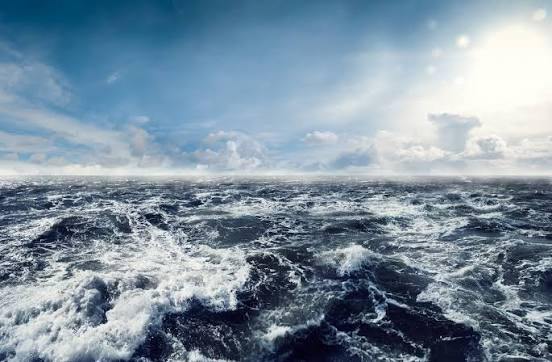

El azul es el color del océano, y el océano es casi todo nuestro planeta: cubre el 71 % de la superficie de la Tierra y contiene el 97 % de su agua. El mar se ve azul porque el agua absorbe los colores de onda larga, como el rojo y el amarillo, y refleja los de onda corta, como el azul. Lo mismo pasa con el cielo, que se ve azul por la forma en que el aire dispersa la luz del sol. Como el mar y el cielo son las dos cosas más grandes que podemos ver, el azul se asocia con la profundidad, la calma y la inmensidad.
En la historia, el azul fue un color de lujo. El pigmento ultramarino se fabricaba con lapislázuli, una piedra que se extraía en Afganistán desde hace miles de años, y en el Renacimiento llegó a ser más caro que el oro; por eso los pintores lo reservaban para el manto de la Virgen María. La expresión "sangre azul" viene de que los nobles no trabajaban bajo el sol, tenían la piel más pálida y se les notaban las venas azules. Hoy el azul es el color de la paz y la confianza: la bandera de la Organización de las Naciones Unidas, aprobada en 1947, tiene fondo azul claro precisamente porque el azul representa la paz, en oposición al rojo de la guerra.
